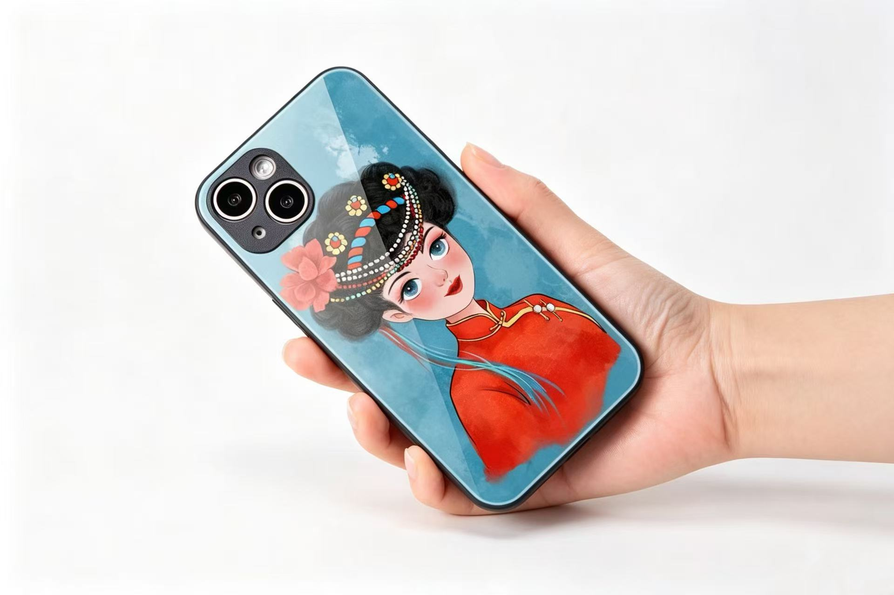
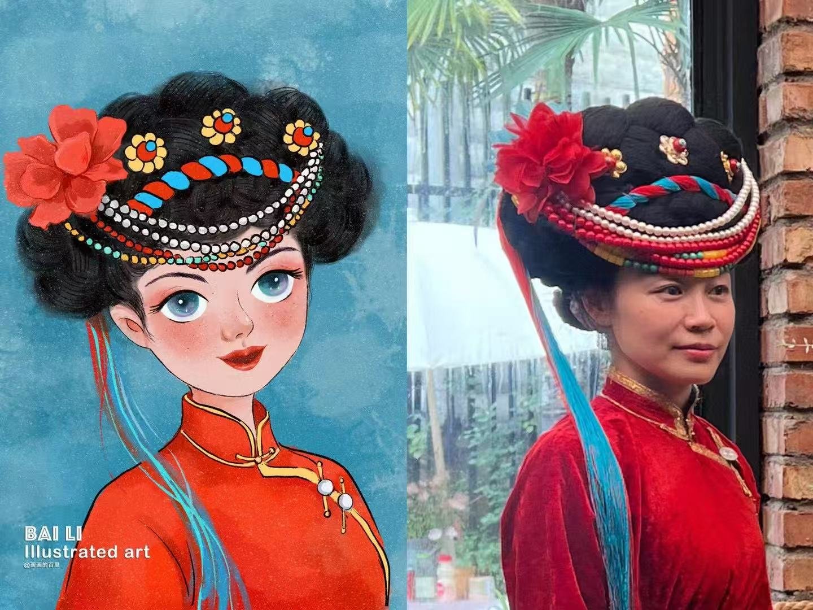
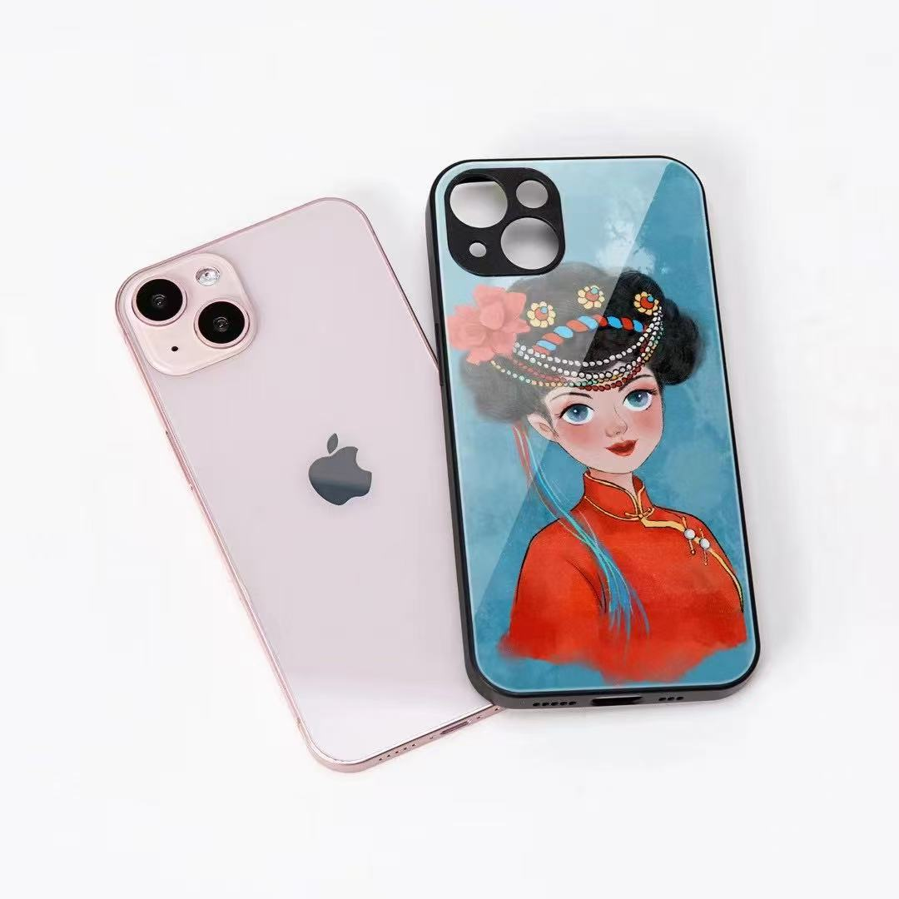
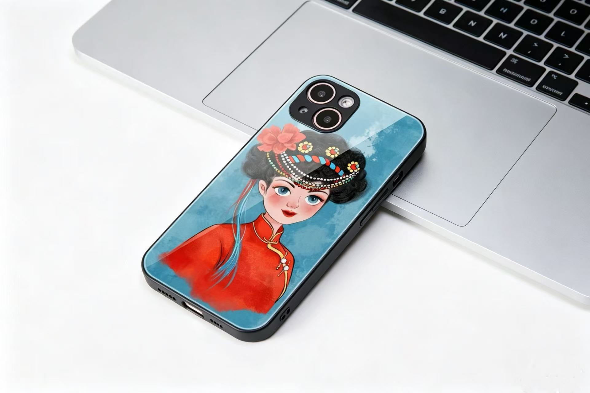

OBJECT / PHONE CASE
手机壳实物预览
少女形象被置入透明质感的手机壳场景中，蓝色背景像湖水，也像一段可以随身携带的旅程。
ART OBJECT / LUGU LAKE DAUGHTER
2023 年，百里旅居泸沽湖，住进摩梭族本地人的家里，和他们一起吃饭、聊天、生活。这个系列以摩梭族少女为灵感，把当地服饰、发饰、湖边生活和旅居时的亲密观察，转译成可以随身携带的文创作品。

FROM JOURNEY TO OBJECT
这件作品不是单纯的纪念品，而是一段旅居生活的延伸：少女明亮的眼睛、红色衣裙、繁复的发饰和泸沽湖的蓝，被放进日常使用的物件里，让一次相遇变成可以被握在手心的记忆。
返回衍生艺术品购买OBJECT / PHONE CASE
少女形象被置入透明质感的手机壳场景中，蓝色背景像湖水，也像一段可以随身携带的旅程。

INSPIRATION / MOSUO GIRL
创作从真实的服饰与发饰出发，再用百里的插画语言重新整理色彩、神情和人物气质。

OBJECT / DAILY USE
让旅途中的一个人物，进入日常生活的尺度里。艺术从墙面走向手边，也从远方回到身体附近。

SCENE / DESK
在工作与生活的场景中，作品保留着湖边的颜色，也提醒人记住那些被陌生地方温柔接住的时刻。